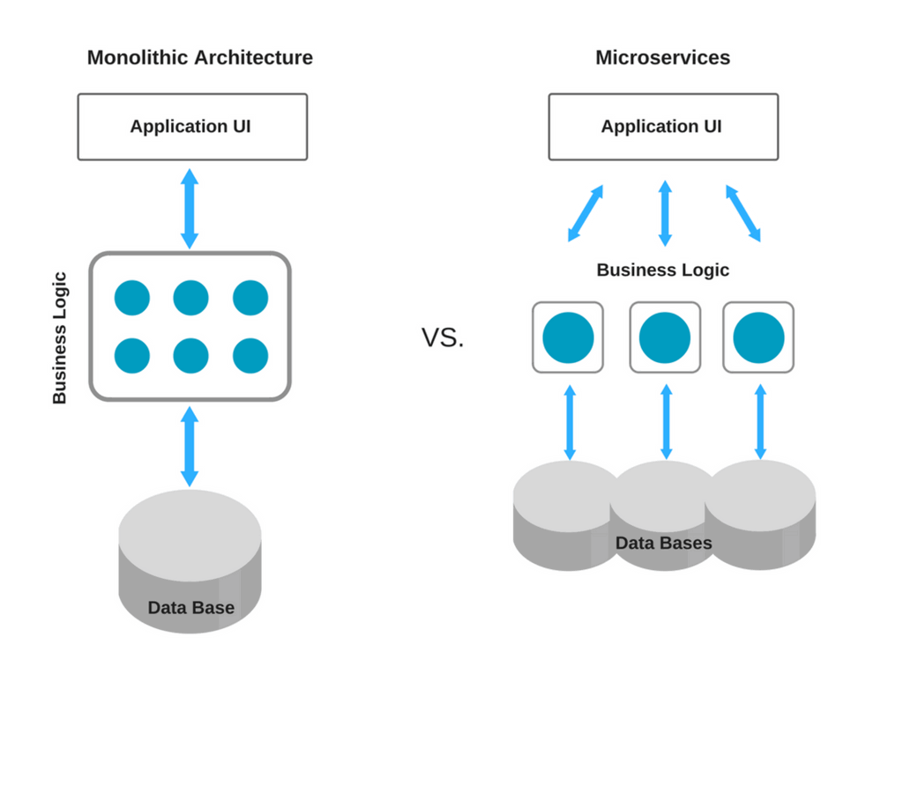

بکند
backendصالح منتظران
Why NodeJs?
Robust technology stack- With total of 368,985,988 downloads and over 750 new contributors in 2018
- Better efficiency and overall developer productivity
- Code sharing and reuse
- Speed and performance
- Easy knowledge sharing within a team
A huge number of free tools
Fast-processing and event-based model- V8 engine
- Non-blocking Input/Output and asynchronous request handling
- Event-based model
Scalable technology for microservices- Since it’s a lightweight technology tool, using Node.js for microservices architecture is a great choice

And other things...- Rich ecosystem
- With about 836,000 libraries available in the npm registry as of now
- Strong corporate support (supported by Joyent)
- IBM, Microsoft, PayPal, Fidelity, and SAP became the founding members of the organization.
- The list of organizations using Node.js in production is constantly growing. It currently includes almost three hundred well-known companies, such as PayPal, Medium, Trello, Uber, and Zendesk.